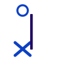
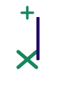

🎼 Pentagrama estándar · Clave neutral (4/4)
1
Mapa interactivo del pentagrama
Haz clic en cada nota de la partitura o en la batería para descubrir su sonido, posición y técnica.
🥁 Diagrama interactivo del set acústico
Toca cualquier tambor o plato para conectarlo al instante con el pentagrama.
Cabeza normalTambores, bombo y toms
Cabeza en XPlatos, hi-hat y percusión metálica
Acento ( > )Tocar con mayor fuerza y velocidad
Nota fantasma ( ● )Golpe suave a pocos cm del parche
2
Símbolos frecuentes y articulaciones
Conoce los signos especiales que le dan dinámica, emoción y expresividad a la partitura.
Básica
Nota normal (Cabeza redonda)
Indica un golpe pleno en el parche. Utilizada principalmente en el bombo, redoblante y todos los toms.
Metales
Cabeza en X (Platos)
Distingue de inmediato las partes metálicas: hi-hat, platos crash y ride, campana o baqueta al aro (cross-stick).
Dinámica fuerte
Acento ( > )
Se toca con mayor velocidad de muñeca para destacar la nota sobre el resto del compás. Clave en funk y rock.
Dinámica suave
Nota fantasma (Ghost note)
Se escribe entre paréntesis (●). Se toca apenas rozando el redoblante para crear un groove fluido y continuo.
Hi-hat

Hi-hat abierto ( ○ )
El círculo sobre la nota indica soltar el pedal del pie izquierdo para que los platillos vibren libremente con sonido largo.
Hi-hat

Hi-hat cerrado ( + )
La cruz sobre la nota indica pisar firmemente el pedal para cerrar los platos, apagando la resonancia en seco.
3
Niveles de entrenamiento
Lee una nota a la vez en el pentagrama. Identifica la posición de memoria y sube de nivel.
Nivel 1 · Fundamentos
¿Qué instrumento representa esta nota?
🔥 Racha: 0
Nota 1 de 3
Observa la posición de la nota en el pentagrama y elige el instrumento correcto.
¡Correcto!
El redoblante se escribe en el tercer espacio.